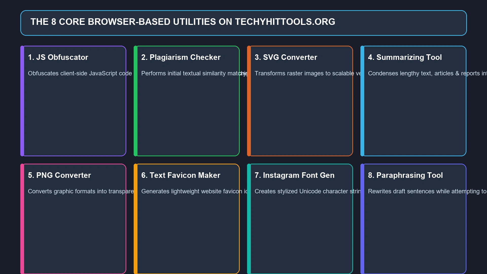
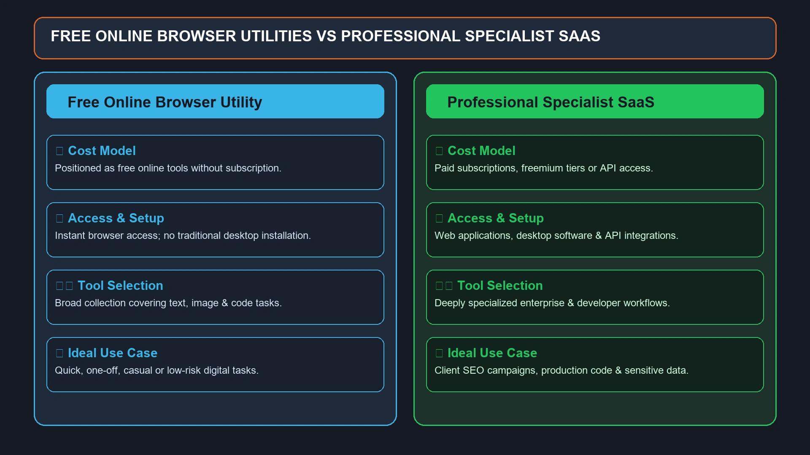
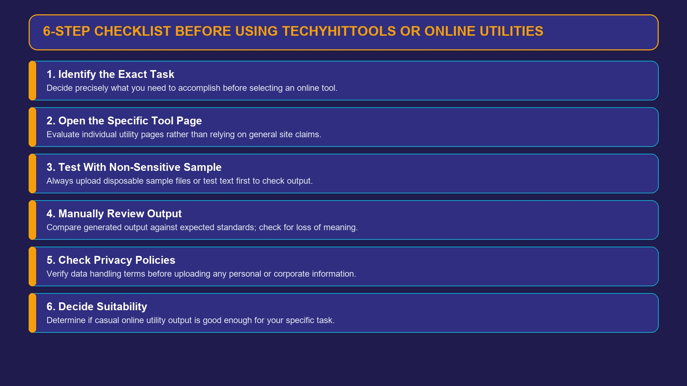

TechyHitTools Org: What Is TechyHitTools.org and How Does It Work?
If you searched for techyhittools org, you are probably trying to understand what TechyHitTools.org actually is, what tools it provides, and whether the website is useful for everyday digital tasks.

If you searched for techyhittools org, you are probably trying to understand what TechyHitTools.org actually is, what tools it provides, and whether the website is useful for everyday digital tasks.
TechyHitTools.org presents itself as a collection of online tools designed around areas such as digital marketing, SEO, content creation, web development, and other technical tasks. The website currently highlights utilities including a JS Obfuscator, Plagiarism Checker, SVG Converter, Summarizing Tool, PNG Converter, Text Favicon Maker, Instagram Font Generator, and Paraphrasing Tool.
At the same time, the site's broader descriptions mention a much larger ecosystem covering SEO optimization, data analysis, content management, e-commerce, security, collaboration, APIs, and other capabilities.
That difference is worth understanding.
Rather than assuming that every feature mentioned on the website is equally available or independently verified, it makes more sense to look at what TechyHitTools.org publicly presents, what its tools are intended to do, who might use them, and what users should verify before relying on the platform for important work.
What Is TechyHitTools Org?
TechyHitTools org is the commonly searched, punctuation-free version of TechyHitTools.org, an online collection of digital utilities.
The website describes Techy Hit Tools as a versatile digital toolkit intended to simplify technical tasks for individuals and businesses. Its stated areas include web development, SEO optimization, data analysis, content management, and digital marketing.
The homepage currently gives users direct access to several browser-based tools instead of requiring them to install traditional desktop software.
The prominent tools currently displayed include:
- JS Obfuscator
- Plagiarism Checker
- SVG Converter
- Summarizing Tool
- PNG Converter
- Text Favicon Maker
- Instagram Font Generator
- Paraphrasing Tool
This makes TechyHitTools.org better described as a general-purpose online utility and content platform rather than a single-purpose software product.
What Does TechyHitTools.org Do?
The basic concept behind TechyHitTools.org is straightforward: provide web-based utilities that users can access through a browser.
Instead of downloading a separate application for every small task, users can potentially use an online tool for things such as:
- Formatting or transforming content
- Working with images
- Converting files or graphics
- Processing text
- Generating social-media-friendly text
- Working with JavaScript
- Checking or improving written content
The exact functionality depends on the individual tool.
This distinction is important because a website can advertise a category of tools without every tool having the same level of functionality, accuracy, or reliability.
For that reason, users should evaluate the particular utility they intend to use rather than assuming the entire platform performs uniformly.
TechyHitTools.org Tool Categories
The tools displayed on TechyHitTools.org cover several different use cases.

1. JS Obfuscator
A JavaScript obfuscator changes the presentation of JavaScript source code to make it more difficult for humans to read directly.
JavaScript obfuscation can be useful when developers want to make source code less immediately understandable.
However, obfuscation should not be confused with encryption.
Obfuscated code can still potentially be analyzed or reverse-engineered, so it should not be treated as a complete security mechanism for protecting secrets or sensitive credentials.
Never place passwords, API keys, private tokens, or other secrets into client-side JavaScript simply because the code has been obfuscated.
2. Plagiarism Checker
A plagiarism checker is designed to help identify similarities between submitted text and other material.
Such tools can be useful for writers, students, publishers, and educators who want an initial originality check.
However, different plagiarism systems use different databases and matching methods.
A result from one online checker should therefore not automatically be interpreted as a definitive academic or legal judgment about originality.
For important academic or professional submissions, users should follow the requirements of the relevant institution or publisher.
3. SVG Converter
SVG, or Scalable Vector Graphics, is a vector image format commonly used for logos, icons, illustrations, and web graphics.
A converter can be useful when someone needs to transform an image or graphic into an SVG-compatible format or work with SVG content.
SVG is particularly valuable on the web because vector graphics can scale to different dimensions without the same pixelation associated with raster images.
Designers and developers should still inspect the resulting file before using it in production, especially when the graphic contains complicated paths, fonts, filters, or transparency.
4. Summarizing Tool
A summarizing tool attempts to reduce longer content into a shorter version containing the main points.
This can be useful when dealing with:
- Long articles
- Notes
- Reports
- Research material
- Draft documents
- General informational content
The most important limitation is that automated summaries can miss context or nuance.
A summary should therefore be treated as a starting point rather than an unquestionable replacement for reading important source material.
5. PNG Converter
PNG is a widely used raster image format, particularly useful for graphics that require transparency or lossless compression.
An online PNG converter can be convenient for users who need to change image formats without opening dedicated image-editing software.
For professional design work, users should check the output dimensions, transparency, compression, and image quality after conversion.
6. Text Favicon Maker
A favicon is the small icon associated with a website and commonly displayed in browser tabs, bookmarks, and other browser interfaces.
A text favicon maker can be useful when someone wants a simple icon based on letters or characters instead of designing a complete graphic manually.
For businesses and brands, however, a favicon should remain visually recognizable at very small sizes.
7. Instagram Font Generator
Instagram font generators typically create stylized Unicode characters that can be copied into social-media profiles, captions, or other text fields.
They can be useful for adding visual variation to social content.
There is an important technical distinction, though: these are generally not conventional fonts being installed on Instagram. They are usually Unicode characters that appear differently because of the character set being used.
Compatibility can vary between devices and platforms.
8. Paraphrasing Tool
A paraphrasing tool attempts to rewrite existing text while preserving its general meaning.
These tools can be useful for brainstorming alternative wording or improving the readability of a draft.
But users should not assume that automatically paraphrased content is always accurate, original, or suitable for publication.
For professional writing, the final version should be reviewed manually for meaning, factual accuracy, tone, and originality.
TechyHitTools and SEO
SEO is one of the areas most strongly associated with TechyHitTools.org.
The website's broader description mentions features such as:
- Keyword research
- On-page SEO analysis
- Backlink analysis
- Rank tracking
- Technical SEO auditing
- Website optimization
These are all legitimate areas of search engine optimization.
However, there is a distinction between describing an SEO capability and demonstrating a fully operational professional SEO suite.
The homepage's visible tool list is considerably more compact than the extensive list of capabilities described in the site's general feature section.
For that reason, SEO professionals should verify the specific functionality available on the relevant page before making TechyHitTools.org part of a production workflow.
TechyHitTools.org for Content Creation
Content is another important part of the website's positioning.
The platform describes tools and capabilities related to:
- Summarization
- Paraphrasing
- Plagiarism checking
- Content analysis
- Content ideas
- Content management
This can make the site interesting to bloggers, students, marketers, and other people who regularly work with text.
But automated content tools work best as assistive utilities, not as substitutes for human judgment.
For example, a paraphrasing tool can change wording while accidentally changing meaning. A summarizer can remove a qualification that was important to the original argument. A plagiarism checker can produce false positives or fail to identify a particular source.
Human review remains important.
TechyHitTools.org for Web Developers
Developers may be interested in TechyHitTools.org because of its JavaScript-related functionality and its broader claims around web development.
The website describes capabilities such as:
- Website building
- Code editing
- CMS functionality
- Website optimization
- JavaScript-related tools
- API integration
Again, it is useful to separate the platform's broad description from the tools visibly presented on the current homepage.
If you are a developer evaluating the website, the most sensible approach is to test the exact utility you need with non-sensitive sample data before incorporating it into a development workflow.
Is TechyHitTools.org Free?
The website describes Techy Hit Tools as a collection of free online tools. Its About section also refers to a suite of more than 30 free online tools.
However, users should distinguish between the site's stated overall tool count and the tools that are visibly accessible from the current homepage.
The homepage currently highlights eight primary utilities, while its broader text refers to a larger set of tools and capabilities.
Because online platforms can change their features over time, the current individual tool page is the best place to confirm whether a particular utility is available and how it works.
Is TechyHitTools.org Safe?
This is one of the most common questions associated with techyhittools org.
There is no responsible basis for giving an absolute guarantee that any online tool website is completely safe for every type of data.
Recent third-party coverage is mixed. One review reports that it found some tools unreliable during its own testing, while another recent review specifically states that it did not perform controlled functionality, privacy, or security testing.
The safest approach is therefore practical rather than absolute.
Avoid entering sensitive information
Do not upload:
- Passwords
- Private keys
- API credentials
- Confidential company documents
- Customer information
- Financial records
- Personally identifiable information
unless you have independently verified how the particular service handles submitted data.
Use test data first
Before using an online converter or processing tool on important files, try it with a disposable sample.
Check the output
Never assume that an automated tool has produced a correct result simply because it returned an output.
Review the site's policies
Privacy policies and terms can change, so users should check the current versions before submitting information they consider sensitive.
Are All TechyHitTools.org Tools Reliable?
There is not enough evidence to make a blanket statement that every tool is either reliable or unreliable.
That is because different tools can have completely different implementations.
Recent independent coverage has produced different conclusions. One review reports unsuccessful or inconsistent behavior in some tools, while another deliberately avoids making functionality claims because it did not conduct controlled testing.
The fairest conclusion is:
Treat TechyHitTools.org as a collection of individual utilities and evaluate each tool separately.
For low-risk tasks, trying a tool with sample data is a reasonable way to determine whether it meets your needs.
For professional or high-stakes work, established specialist software may provide stronger documentation, support, reliability, and accountability.
TechyHitTools.org vs. Professional Software
A free browser-based utility and a professional SaaS product serve different purposes.

| Factor | TechyHitTools.org | Professional specialist software |
|---|---|---|
| Cost | Website describes tools as free | Often free, paid, or subscription-based |
| Setup | Browser-based | Usually browser, desktop, or both |
| Tool range | Broad | Often specialized |
| Documentation | Varies | Usually more extensive |
| Support | Should be checked individually | Often structured support |
| Reliability | Should be evaluated per tool | Usually documented by provider |
| Best for | Quick or low-risk tasks | Repeated professional workflows |
| Data handling | Verify before uploading sensitive data | Review provider's security terms |
Neither approach is automatically better.
If you need to quickly convert an image or generate simple text formatting, an online utility may be convenient.
If you are managing client SEO campaigns, processing confidential business data, or deploying production code, the additional controls offered by established specialist platforms can be much more important.
Who Might Use TechyHitTools.org?
The website says it is designed for a broad audience that includes webmasters, students, teachers, SEO professionals, digital marketers, developers, data analysts, and businesses.
That broad target audience makes sense for a multi-purpose tool site.
Students
Students may find text utilities, summarization, and basic content tools useful for study-related tasks.
They should still follow their institution's rules regarding AI, paraphrasing, plagiarism, and permitted software.
Bloggers
Writers can potentially use summarizing, paraphrasing, and content-related utilities during the drafting process.
SEO professionals
SEO users may be interested in keyword, backlink, and optimization functionality, but should verify the actual capabilities available.
Developers
Developers may find JavaScript and other web-development utilities useful for quick tasks.
Social media creators
The Instagram Font Generator can be useful for experimenting with stylized Unicode text.
Small businesses
Small businesses may appreciate having several simple utilities available without installing separate applications.
Advantages of TechyHitTools.org
There are several reasons someone might want to try the platform.
Browser-based access
Online tools can be convenient because there is generally no traditional software installation process.
Multiple utilities in one place
The website brings several unrelated digital tasks under one domain.
Free-tool positioning
The site describes its utilities as free, which can make them attractive for users who only need occasional functionality.
Broad audience
The tools are positioned toward everyone from students and writers to marketers and developers.
Simple use cases
For small, one-off tasks, a browser utility can sometimes be faster than opening a full professional application.
Limitations to Keep in Mind
The platform also has limitations that should be considered.
Broad claims versus visible tools
The site's general feature descriptions cover a much wider set of capabilities than the eight tools currently highlighted on the homepage.
Tool reliability can vary
Independent reviews have reported mixed experiences, so users should test important tools rather than assuming consistent results.
Limited suitability for sensitive information
As with any online utility, users should understand data handling before uploading confidential material.
Automated output requires review
Paraphrasing, summarizing, plagiarism checking, and other automated processes can make mistakes.
Professional workflows may require more
Agencies, developers, publishers, and businesses may need documented reliability, APIs, account management, audit trails, customer support, or stronger privacy controls that a simple free tool site may not provide.
What Should You Check Before Using TechyHitTools?
If you want to try TechyHitTools.org, use a simple checklist.

Step 1: Identify the exact task
Don't start by assuming the entire platform is suitable. Decide exactly what you need to accomplish.
Step 2: Open the relevant tool
Look at the individual utility rather than relying solely on the site's general feature description.
Step 3: Test it with non-sensitive data
Use a sample file or harmless text first.
Step 4: Check the output
Compare the result with what you expected.
Step 5: Review privacy information
If the tool requires an upload or text submission, understand what happens to the data.
Step 6: Decide whether the result is good enough
A tool can be perfectly useful for a casual task while being unsuitable for professional production work.
TechyHitTools.org and User Privacy
Privacy is especially relevant for online processing tools.
Whenever you paste text or upload a file to a third-party website, you should consider what information the file contains.
For example, a seemingly ordinary document might contain:
- Customer names
- Email addresses
- Phone numbers
- Internal company information
- Source code
- API credentials
- Private research
- Financial information
A free tool is not worth exposing sensitive information.
For that reason, users should review the site's current Privacy Policy and avoid submitting confidential data unless they are comfortable with the stated data practices.
Does TechyHitTools.org Replace Paid SEO Tools?
Not necessarily.
A free utility site and a dedicated SEO platform are generally designed for different levels of work.
Professional SEO platforms often provide integrated datasets, historical rankings, competitor analysis, backlink databases, reporting, project management, and other features that require substantial infrastructure.
TechyHitTools.org's broad public descriptions mention many SEO capabilities, but the current homepage does not visibly present the same depth of a conventional enterprise SEO suite.
For occasional experimentation, free tools can be useful.
For agency reporting or serious search campaigns, users should compare the exact capabilities, data sources, update frequency, limits, and support available from specialist platforms.
A Balanced Verdict on TechyHitTools Org
So, is techyhittools org worth using?
The answer depends on what you need.
If you are looking for a quick online utility for a simple, low-risk task, TechyHitTools.org may be worth trying.
If you need dependable results for client work, confidential information, production development, academic submissions, or important SEO decisions, you should be more cautious.
The biggest reason is not necessarily that the platform is "bad." It is that the website's public description is broader than the small set of utilities most clearly visible on its homepage, and independent reviews have not reached a uniform conclusion about tool performance.
That makes individual evaluation more sensible than a blanket recommendation.
TechyHitTools Org: Key Takeaways
Here are the most important points for anyone searching techyhittools org:
- TechyHitTools.org is an online digital-tool website.
- The platform positions itself around SEO, digital marketing, content, development, and technical utilities.
- Its homepage currently highlights eight tools.
- These include a JS Obfuscator, Plagiarism Checker, SVG Converter, Summarizing Tool, PNG Converter, Text Favicon Maker, Instagram Font Generator, and Paraphrasing Tool.
- The site's broader description claims more than 30 free tools and a much wider range of functionality.
- Not every advertised capability is equally visible on the current homepage.
- Independent reviews have reported mixed experiences with some tools.
- Users should test individual utilities rather than assuming every feature works identically.
- Sensitive or confidential information should not be submitted without understanding the site's data practices.
- For high-stakes professional work, established specialist software may be a better choice.
Frequently Asked Questions About TechyHitTools Org
Techyhittools org refers to TechyHitTools.org, a website offering online digital utilities related to content, SEO, development, images, and other technical tasks.
The current homepage prominently lists JS Obfuscator, Plagiarism Checker, SVG Converter, Summarizing Tool, PNG Converter, Text Favicon Maker, Instagram Font Generator, and Paraphrasing Tool.
The website describes Techy Hit Tools as a collection of free online tools.
It presents itself as a platform for digital marketing and SEO and describes capabilities such as keyword research, backlink analysis, rank tracking, and technical SEO auditing. However, users should verify the availability and functionality of each specific feature.
Potentially. The website includes a JS Obfuscator and describes broader web-development capabilities. Developers should test individual tools with non-sensitive code before using them in production workflows.
Yes, the platform prominently lists tools such as a summarizer, plagiarism checker, and paraphrasing tool. These can assist with drafts and content workflows, but their output should be reviewed manually.
There is not enough evidence to provide an absolute safety guarantee. Recent third-party reviews have reached mixed conclusions, so users should exercise normal caution, especially with confidential information.
That cannot be confirmed universally. Different tools can behave differently, and independent reviews have reported mixed results. The safest approach is to test the particular tool you need with sample data before relying on it.
It may be useful for simple, low-risk tasks. For sensitive, high-stakes, or mission-critical workflows, users should compare it with established specialist software that provides the reliability, documentation, security, and support they require.
Techy Hit Tools is the name used by the website itself for its digital toolkit. The domain associated with the platform is TechyHitTools.org.
Final Thoughts
TechyHitTools org is a search term for TechyHitTools.org, a website positioned as a collection of free online tools for digital marketing, SEO, content creation, web development, and other technical tasks.
Its current homepage gives visitors access to a relatively focused group of utilities, including tools for JavaScript, plagiarism checking, image conversion, summarization, favicon creation, Instagram text, and paraphrasing.
At the same time, the site's broader descriptions present a much larger vision involving SEO analysis, data analytics, content management, e-commerce, security, collaboration, and integrations.
That makes one point particularly important: don't judge the platform solely by its broad feature list. Evaluate the exact tool you intend to use.
For a quick, low-risk digital task, an online utility can be convenient. For confidential information, production code, client reporting, academic submissions, or important business decisions, a more established specialist solution may be the safer choice.
Ultimately, the most balanced way to look at TechyHitTools.org is as a general online utility platform whose individual tools should be evaluated on their actual functionality, output quality, and data-handling practices rather than on the site's broadest claims alone.
For more such information read on crackstube.blog
Enjoyed this Technology guide?
Explore more Tech articles or submit your own guest contribution on CracksTube.